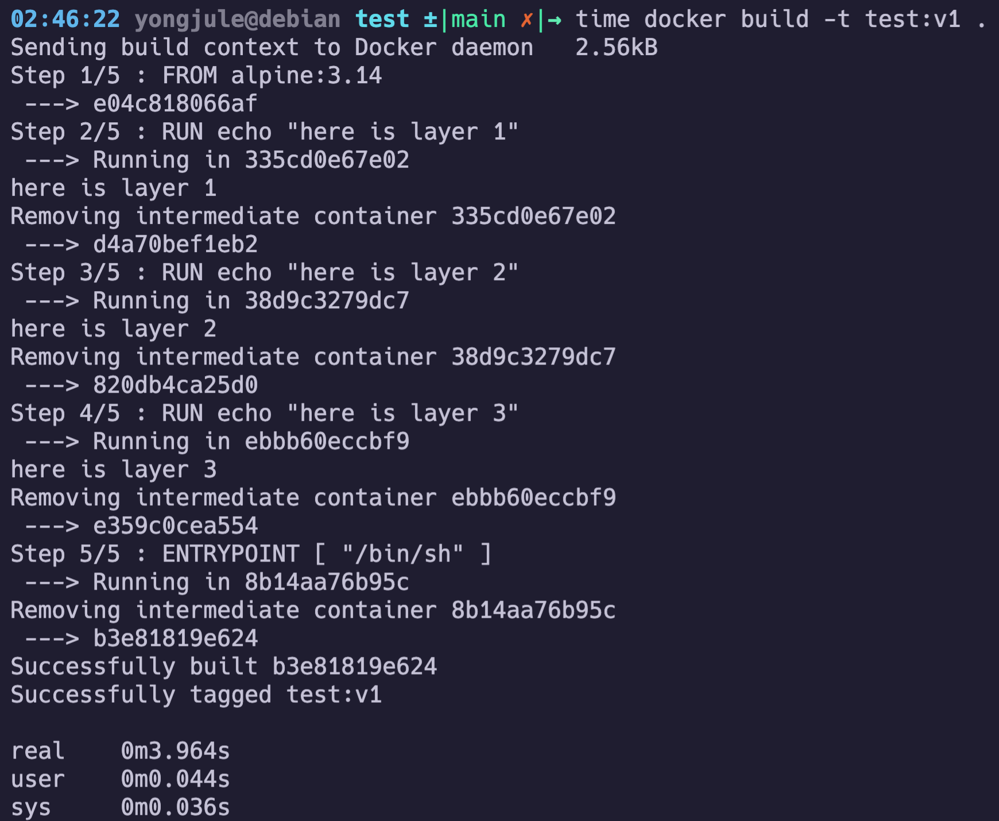
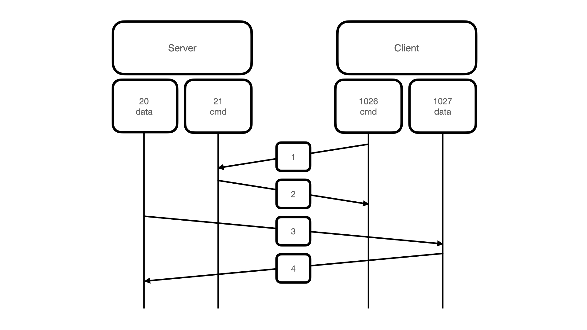

도커는 OS-level 가상화를 통해 컨테이너를 쉽게 다루게 해주는 플랫폼임. 이미지 기반으로 컨테이너를 손쉽게 생성한다는 점으로, 어플리케이션마다 필요한 환경을 구축, 테스트, 배포하기 좋음!
컨테이너 기술은 그 전부터 존재했으며 도커는 이를 정말 잘 활용할 수 있도록 만들어졌을 뿐임.
이와 같이 다양한 기능을 제공하는데, client(shell or docker desktop app)에서 명령을 하면 Docker daemon이 이미지와 컨테이너를 관리하고, 필요하면 Registry(주로 Docker hub)에서 이미지를 가져오기도 함.
도커와 가상머신은 독립된 환경을 제공한다는 점에서 유사하고, 직접 컨테이너를 사용하면 vm과 큰 차이가 없어 보이지만 컨테이너가 가상머신보다 성능이 훨씬 좋다는 이점이 있음.
이런 차이는 환경을 구축하는 방식에서 비롯되는데, VM의 경우는 호스트 머신 위에 가상화나 반-가상화를 통하여 새로운 os를 구축하고, 그 위에서 작동하는 방식이지만 도커 컨테이너의 경우는 호스트 머신 위에서 리눅스 커널의 namespace, cgroup 기능을 통해 작동하기 때문에 훨씬 가볍고 성능이 좋음. docker container 참고
또한 도커 컨테이너를 생성하기 위해 만드는 이미지 파일도 레이어로 분할되어 생성되기 때문에 변경점이 있다면 그 레이어만 업데이트하고, 나머지는 캐시되어 있는 데이터를 활용할 수 있기 때문에 이미지 생성 시간이 단축됨. docker image 참고

하지만 단점도 존재하는데, process-level의 격리이기 때문에, 상대적으로 보안이 좋지 않음.
도커 이미지는 Dockerfile의 instruction들을 기반으로 만들어지며 컨테이너를 생성하기 위한 snapshot 역할을 함.
이때 각 instruction에 따라 layer된 이미지를 생성하는데, 그 구조는 아래와 같음.

각 layer는 READ-ONLY이며 union file system를 통하여 최상위 layer에서 일관성 있는 파일 구조를 확인할 수 있게 됨.
이렇게 layer화된 구조를 가져서, 특정 instruction이 변경되면 모든 이미지를 다시 빌드하는게 아니라, 변경점이 있는 layer부터 빌드할 수 있고, 이전 layer는 cache를 이용하여 빠르게 빌드할 수 있음
시간 비교
첫 빌드

같은 이미지를 다시 빌드했을 때

layer 2를 변경했을 때
time 명령어를 이용하면 확연한 시간 차이를 볼 수 있음.
이렇게 READ-ONLY로 만들어진 이미지 위에 R/W인 Container layer를 올리고, 이 layer에서 작업하기 때문에 컨테이너에서 파일을 생성하거나 삭제해도 image layer에는 영향이 없음.
이러한 특징 때문에 이미지는 불변성을 지니고 빠른 빌드타임을 가질 수 있으며 원격 저장소에서 이미지를 pull 받을때 역시 이렇게 중복된 layer를 제외하고 받기 때문에 빠른 속도를 보임.
만약, 컨테이너의 작업 사항을 이미지로 저장하고 싶다면 docker commit 명령어를 통해 컨테이너 layer를 이미지로 통합할 수 있음.
컨테이너는 이미지를 통해 생성되는 instance로, 독립된 환경을 제공해주는 프로세스임. docker image에서 기술한 것 처럼, 이미지 위에 R/W layer를 올린 형태이며, 컨테이너가 삭제되면 작업 내역도 모두 사라짐.
하나의 빈 레이어만 생성하면 되기 때문에 매우 빠르게 생성할 수 있음!

출처 : docker 공식문서
각 컨테이너는 완전히 새로운 환경을 생성한 것 처럼 작동하며 root 디렉토리, pid, 네트워크, 메모리, cpu등을 새롭게 구성할 수 있음.
이는 리눅스 커널의 namespace와 cgroup라는 기능으로 구현됨!
결국, vm과 다르게 컨테이너는 Host os에서 native로 작동하기 때문에 훨씬 가볍고 빠름.(리눅스가 아닌 환경에서는 docker app이 리눅스 환경으로 가상화를 하여 작동함.)
컨테이너 프로세스와 init 프로세스의 namespace 비교
TODO: 컨테이너 프로세스의 pid 여러개 찍히는거 보여주는 이미지 넣기
컨테이너는 독립된 pid namespace에서 실행되기 때문에 내부에서 pid 1을 갖게 되는데, 리눅스의 pid 1은 특별한 작동을 하기 때문에 이를 고려해야함.
init process라고 알려져 있으며 고아나 좀비 프로세스를 적절히 핸들링 해줄 필요가 있음. 또한 PID 1에 시그널 핸들러가 없으면 SIGTERM은 아무것도 하지 않음.init 프로세스가 할당되지만, 도커에선 <executable>이 바로 PID 1로 실행됨.docker stop 명령어는 SIGTERM 을 보내서 컨테이너를 중단시키는데, 만약 10초간 컨테이너가 중단되지 않으면 SIGKILL 명령어로 프로세스를 예상치 못하게 종료시키며, 문제가 발생할 수 있음!SIGTERM 시그널 핸들링이 잘 되어 있는 프로그램, SIGTERM을 받으면 자식 프로세스들에게 보내고, 최종적으로 자기 자신도 종료되는 방식으로 작동)를 -init플레그를 통하여 지원하기 때문에 이를 사용하거나, dump-init, baseimage-docker같은 프로그램을 사용하여 시작하는것을 추천. (모두 리눅스의 PID 1 역할을 해주는 경량화된 프로그램)컨테이너 생성시 로컬에 있는 특정 디렉토리를 컨테이너에 마운트 할 수 있으며 (bind mount), 도커로 볼륨을 생성하여 마운트(volume mount) 할 수도 있다.
Docker 공식 문서는 volume 마운트를 사용하길 강력이 추천하지만 서브젝트 내용상 bind mount처럼 사용하게 됨…
컨테이너 생성시 가상 네트워크를 컨테이너에 할당할 수 있으며 컨테이너끼리 통신하기 위해 같은 네트워크로 여러개의 컨테이너를 구성할 수 있다. 네트워크 namespace로 호스트와 격리되며 다양한 방식으로 네트워크를 구성할 수 있음. 공식문서
도커 컴포즈는 docker app의 서비스, 네트워크, 볼륨을 정의하는 yaml 파일임. 컨테이너를 실행하기 위해 volume, network, environment 등 다양한 옵션을 통해 run 을 하게 되는데, 이런 복잡한 명령어를 파일에 정의하여 자동으로 컨테이너들을 실행시켜줌.
따로 설치해야함. Docker desktop에서는 자동으로 설치됨.
또한 필요하다면 이미지를 빌드해주고, 변경사항이 있다면 그 컨테이너만 다시 실행시켜 주며, .env 로 환경변수를 설정하고 depends_on 을 통해 의존성있는 컨테이너들의 빌드 순서를 정해줄 수 있음!
일반적으론 docker hub에 official image들로 mariadb, nginx, wordpress-phpfpm 등 다양한 컨테이너들을 손쉽게 구동할 수 있지만 alpine이나 debian의 베이스 이미지에서 서비스를 위한 Dockerfile을 직접 작성해야함.
alpine 리눅스는 굉장히 경량화된 리눅스로 가벼운게 이점인 컨테이너의 특성 때문에 docker image의 베이스로 상당히 많이 쓰이기 때문에 alpline linux로 base를 잡음.
Dockerfile은 다음과 workflow로 작성함
FROM alpine:3.14
RUN apk update && apk add tini;
RUN [필요한 패키지 다운로드]
COPY [필요한 파일 복사]
EXPOSE [사용하는 포트]
ENTRYPOINT ["/sbin/tini", "--", "/tmp/entrypoint.sh"]
CMD ["서비스를 실행하는 커맨드"]
VOLUME [마운트 포인트]
필요한 패키지를 다운로드 받는 과정은 주로 Dockerfile의 RUN 커맨드를 활용하여 image cache를 활용하기 쉽게 구성하였고, 해당 컨테이너에서 서비스를 가동하기 위한 작업은 entrypoint.sh 에서 쉘 스크립트를 이용하여 작성함.
MariaDB는 RDBMS(관계형 데이터베이스)로 MySQL에서 떨어져 나온 거임. MySQL이 Oracle에 인수되면서 상업적 이용을 위해선 비용을 지불해야 했고, 이를 맘에 안들게 여긴 MySQL의 핵심 창업자 Monty씨가 나와 동료들과 MySQL의 코드 베이스를 이용하여 만든게 MariaDB(5.5버전 기준으로 포크해서 만들음). MariaDB는 현재도 오픈소스로 유지되고 있음. 디비 랭킹 사이트
MySQL과 완벽한 호환성을 위하여 MySQL 관련 바이너리를 실행해도 MariaDB가 돌아가게 할 수 있음.
분리된 시점이 어느정도 지난 만큼 내부 구조나 성능에 차이가 있긴 함! (MariaDB vs mysql)
MariaDB를 로컬에서 직접 설정하려면 config 작성, DB init, systemctl 같은 도구들을 활용하여 하나하나 설정하면 되지만, 도커 이미지를 만들어서 컨테이너로 사용하려면 이 모든 작업이 자동으로 이루어져 유저가 바로 사용할 수 있어야 하고, 최대한 경량화 하는게 좋음.
Alpine Linux를 사용하기 때문에 systemctl같은 Mariadb Daemon을 다루는 도구가 없고, alpine에서 openRC라는 패키지가 systemctl을 대체하는데 도커 base 이미지로 받아오는 alpine linux 이미지에는 이 패키지도 안깔려있음. 따라서 직접 mysqld(mariadbd)를 이용하여 서버를 열어야 함!
Dockerfile instruction 을 이용하여 필요한 MariaDB 패키지를 다운받고, 쉘 스크립트에서 초기 DB install을 진행함. 이때 컨테이너 특성상 원격으로 DB에 접근하게 될텐데, root 유저로 원격에서 접근하는 것은 보안상 문제가 있으므로 이 단계에서 유저와 DB를 만들고 적절한 권한을 줘아함.
Mariadb 공식 문서에서 Mariadb daemon을 가동시키는 방법으로 mysqld_safe(mariadbd_safe)을 사용하길 추천하는데, mysqld_safe는 자식 프로세스로 mariadbd를 실행하고, 해당 프로세스를 관리해주는 역할을 함. 이때 SIGTERM이나 SIGQUIT같은 시그널을 받으면 자식인 mariadbd에 넘겨서 잘 종료되게 한 뒤 재시작을 시켜버림.
Docker로 MariaDB container를 관리하는 입장에서는, 서비스를 종료하고 싶을때 signal을 보내도 계속 살아나니 결국 SIGKILL으로 MariaDB container 를 강제종료 시켜서 이는 예상치 못한 문제를 낳을 수 있음! 따라서 mariadbd로 실행을 해야함.
워드프레스는 오픈소스 웹 사이트 제작 도구로 전 세계 웹사이트 시장 점유율 1위를 차지하고 있는 서비스임. 백악관 홈페이지 부터 이노아카 블로그까지 정말 많이 사용됨…!
하지만 이런 오픈소스의 이점을 살리려면 프로그래밍 언어에 익숙해야 하고 영어에 언어 장벽이 없어야 해서 한국에선 자주 쓰이지 않음
LAMP(Linux + Apache + MySQL + PHP) 스택 이라는 가장 널리 사용되는 웹 앱에 대한 소프트웨어 스택이 있음. 모두 오픈소스 소프트웨어로 상용 패키지를 대체할 수 있음을 소개하기 위해 1998년에 나온 용어이며 워드프레스 같은 웹 프레임워크를 호스팅 하기에 충분한 최초의 오픈소스 소프트웨어 스택 중 하나여서 이 용어와 개념이 인기를 얻음.

요즘은 LAMP 스택에서 파생된 LEMP 스택 (apache 대신 nginx), WAMP 스택 (linux 대신 windows), MEAN(MongoDB + Express + Angular.js + Node.js) 등 많은 용어가 나왔지만 구성은 LAMP 스택과 비슷함.
Wordpress는 호스팅 서버가 따로 필요하고, DB와 연결되어 작동하기 때문에 이 LAMP 스택을 활용하기에 정말 좋은 도구임
Common Gateway Interfaced의 약자. html만 제공하다가 외부 앱과 상호작용을 할 필요성을 느껴서 나온 동적 페이지를 제공하기 위한 규격화된 약속. 웹서버와 서로 데이터를 주고받는 방식으로 작동함!
어떤 언어로든 작성될 수 있으며 url에 <protocol>://<domain>/(cgi-bin/<cgi_program_name>|<program>.cgi) 방식을 주로 씀. 만약 URL에 query string이 있으면 환경변수로 QUERY_STRING이 설정되어 cgi 프로그램에서 사용할 수 있음.
CGI 프로그램이 요청된 작업을 수행하고 html문서 형태로 stdout으로 쏴주면, 서버가 받아서 html 문서를 유저에게 쏴주는 방식.
하지만 1 요청당 1 프로세스를 생성하고, 요청이 끝나면 프로세스가 종료되는 방식이라서 성능이 구림
FastCGI는 프로세스들을 생성해두고, 한 프로세스당 여러개의 요청을 계속 처리함.
FastCGI가 메모리를 더 많이 소모하지만 더 빠름!

php-fpm은 php에서 공식적으로 FastCGI를 지원하면서 만들어진것. (PHP Fastcgi Process Manager)
Wordpress + php-fpm은 워드프레스를 php-fpm을 이용하여 FastCGI로 제공하는것!
How the web works: HTTP and CGI explained
Nginx는 가장 인기있는 웹 서버 프로그램이며 웹서버로 시작했지만 리버스 프록시, 로드밸런스를 위해서도 사용됨. 개발 당시 가장 유명했던 아파치 웹서버가 한번에 10만개 이상 연결을 할 수 없다는 한계때문에 만들어졌음. 아파치는 연결 1개당 프로세스 하나를 할당하여 연결을 처리하는 반면 Nginx는 이벤트 중심의 비동기 아키텍쳐로 연결을 처리함. 따라서 적은 메모리 사용량으로 많은 커넥션을 핸들링 할 수 있게됨!
비동기 I/O이기 때문에 큐에 I/O작업이 많이 쌓이는 경우 apache가 더 낫고, 이럴때는 Nginx를 리버스 프록시 서버로 사용할 수 있음.
Nginx는 마스터 프로세스가 있어서 config를 읽고 검증한 후 그에 맞게 적용하고, 워커 프로세스를 생성 및 관리함.
워커 프로세스의 수는 cpu의 코어수, 디스크 수를 고려하여 만들어지며 기본값으로 최대 core 수 만큼 만들어지기 때문에 컨텍스트 스위칭의 비용이 적음.
또한 Nginx는 웹서버의 역할 뿐만 아니라, 리버스 프록시 서버의 역할도 할 수 있기 때문에 로드밸런싱과 보안상의 이점을 가져올 수 있음.
프록시
Load balancing
Nginx with SSL
nginx config 파일은 여러 모듈들 단위로 작성됨. /etc/nginx/nginx.conf에 base module이 정의되어 있고 /etc/nginx/conf.d/추가적인 모듈들을 정의함.
user, worker_process, error_log, pid 등 다양한 설정을 할 수 있으며 아래와 같이 블록 단위로 설정함.
자세한 내용은 링크 참고
user www-data;
worker_processes auto;
error_log /var/log/nginx/error.log notice;
pid /var/run/nginx.pid;
events {
worker_connections 1024;
}
http {
include /etc/nginx/mime.types;
default_type application/octet-stream;
log_format main '$remote_addr - $remote_user [$time_local] "$request" '
'$status $body_bytes_sent "$http_referer" '
'"$http_user_agent" "$http_x_forwarded_for"';
access_log /var/log/nginx/access.log main;
sendfile on;
#tcp_nopush on;
keepalive_timeout 65;
#gzip on;
include /etc/nginx/conf.d/*.conf;
}
# /etc/nginx/conf.d/default.conf
server {
...
location / {
...
proxy_pass <http://backend:3000>;
}
}
TLS에 대한 설명은 링크 참조
server {
listen 443 ssl http2;
server_name ${DOMAIN_NAME};
access_log /var/log/nginx/${DOMAIN_NAME}.access.log main;
location / {
root /var/www/html/wordpress;
index index.php index.html index.htm;
}
ssl_certificate ${DOMAIN_NAME}.crt;
ssl_certificate_key ${DOMAIN_NAME}.key;
ssl_session_timeout 5m;
ssl_protocols TLSv1.2 TLSv1.3;
ssl_prefer_server_ciphers on;
...
}
위와 같은 방식으로 nginx에 TLS 설정을 할 수 있음.
ssl_certificate : 인증서 파일의 위치
ssl_certificate_key : 인증서 파일의 키 파일의 위치
ssl_session_timeout : TLS 세션 유효시간
ssl_protocols : 사용할 프로토콜
ssl_ciphers : 사용할 암호화 방식 기본값은 HIGH:!aNULL:!MD5 이며 openssl ciphers -v "HIGH:!aNULL:!MD5" 명령어에 대응되는 암호화 방식이 모두 포함됨. openssl 참고,
ssl_prefer_server_ciphers : TLS 암호화 방식 협상 과정에서 서버측 암호화 방식 우선.
더 많은 정보는 nginx ssl configopenssl ciphers 참고
php-fpm은 php를 fcgi모드로 동작하게 해주며, 다양한 최적화가 되어있음
nginx에는 fcgi을 위한 다양한 config 옵션을 지원함
location ~ \\.php$ {
fastcgi_pass wordpress:9000;
fastcgi_index index.php;
fastcgi_param SCRIPT_FILENAME /var/www/html/wordpress$fastcgi_script_name;
include fastcgi_params;
}
fastcgi_pass : 해당 url로 들어온 요청에 대하여 php-fpm과 nginx을 연결하기 위한 인터페이스를 지정.
fastcgi_index : 요청된 URL이 / 로 끝날때 자동으로 덧붙임
fastcgi_param : 요청이 fastCGI로 전달되도록 구성하는 지시어.
Nginx를 reverse proxy로 활용하기 위한 설정이며 특정 url의 포트로 보낼 뿐만 아니라 http 버젼, 헤더, 버퍼 등을 설정할 수 있음.
location /backend {
proxy_pass <http://backend:3000>;
proxy_http_version 1.1;
proxy_set_header X-Real-IP $remote_addr;
proxy_set_header X-Forwarded-Host $host;
proxy_set_header X-Forwarded-Port $server_port;
}
proxy_pass : 요청이 들어오면 어떤 url로 전달되는지 지정
proxy_http_version : http 버전 지정
proxy_set_header : 요청에 대한 헤더 설정
FTP는 파일 전송 프로토콜으로, 서버와 클라이언트 사이에 파일을 전송하기 위해 나온 것임. 1971년에 나왔으며 연결하기 위해선 로그인을 해야함(서버가 허용한 경우 익명 사용자 가능).하지만 이런 정보가 plaintext 형태로 넘어가기 때문에 보안상 상당히 취약하며, 2021년에 대부분 브라우저에서 지원을 중단하고 SFTP(ssh + FTP) 나 FTPS(FTP + TLS)를 사용함.
이 FTP는 파일 전송을 위해 두개의 포트를 사용하며 한 포트는 연결을 위해 사용하고(command port) 다른 포트는 데이터 전송을 위해 사용하며(data port) 여기서 passive mode와 active mode로 나뉨.
command port를 위해선 통상적으로 21번 포트를 사용하지만 data port는 passive mode와 active mode에서 서로 다름.
active mode에서는 다음과 같이 진행됨

이때 client측에서 문제가 발생함. client는 서버와 data port로 실제로 연결된게 아니며 단순히 서버에게 data port를 위하여 어떤 포트를 Listening 할건지 알려주는 거임. 서버측에서 data port로 연결하려고 하면 클라이언트측 방화벽에선 그저 외부 시스템에서 연결을 하려는 것으로 보이기 때문에 방화벽에 막힘.
active mode의 문제를 해결하기 위해 등장한 방법이 passive mode이며 PASV라고도 불림.
passive mode FTP에서 클라이언트는 두 연결을 모두 시작하여 방화벽 문제를 해결함.

여기서 서버가 특정 포트들을(data port) 열어둬야 한다는 문제가 발생함. 하지만 서버측에서 특정 포트 범위를 data port로 쓰도록 설정하여 문제를 해결할 수 있음.
또한 passive mode를 지원하지 않는 클라이언트가 있을 수 있으나 요즘엔 그런거 없음.
| FTP | HTTP |
|---|---|
| 인증이 필요함 | 인증이 필요하지 않음 |
| 대용량 파일 전송에 효율적 | 작은 파일을 전송할 때 효율적 |
| 파일이 메모리에 저장됨 | 메모리에 저장되지 않음 |
| 클라이언트와 서버간에 파일을 다운로드하고 업로드 할때 사용 | 웹페이지 전송에 사용 |
| 상태(state)를 저장하는 프로토콜 | 상태를 저장하지 않는(stateless) 프로토콜 |
| 양방향 통신 시스템 지원 | 단방향 통신 시스템 |
| data connection, command connection으로 나뉨 | data connection만 있음 |
리눅스의 ftp-server 프로그램으로 vsftp, pro-ftp, pure-ftp등 다양한 프로그램이 있는데, alpine linux와 호환이 잘되는 vsftp를 선택.
ftp 특성상 로그인하여 접속하게 되므로 적절한 유저를 잘 생성해줘야 하고, 파일시스템에 접근하기 때문에 권한 설정도 잘 해줘야함. 외부에서 접근할 수 있는 디렉토리를 config파일에 정의해서 특정 디렉토리에만 접근하게 해주고, container로 관리하기 위해 로깅 및 background 설정 정도를 해주면 filezilla를 통해 손쉽게 접근 가능해짐.